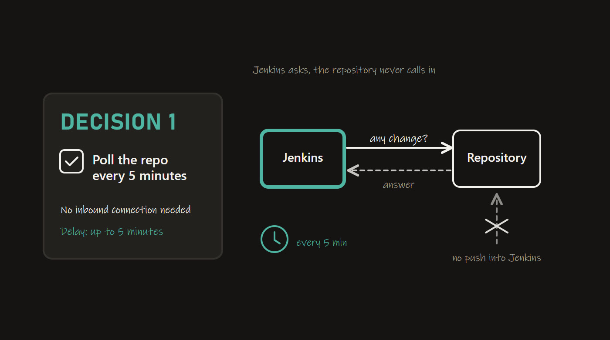
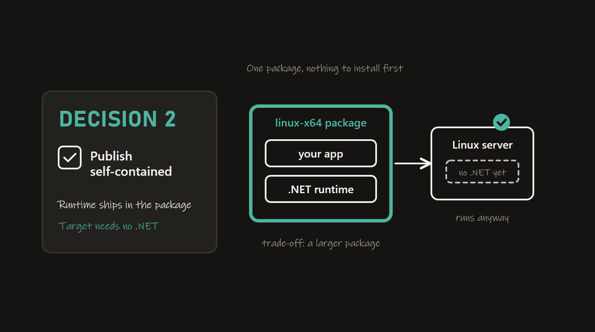
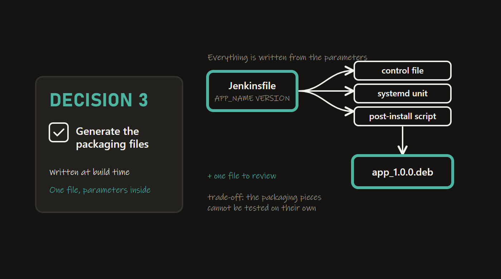
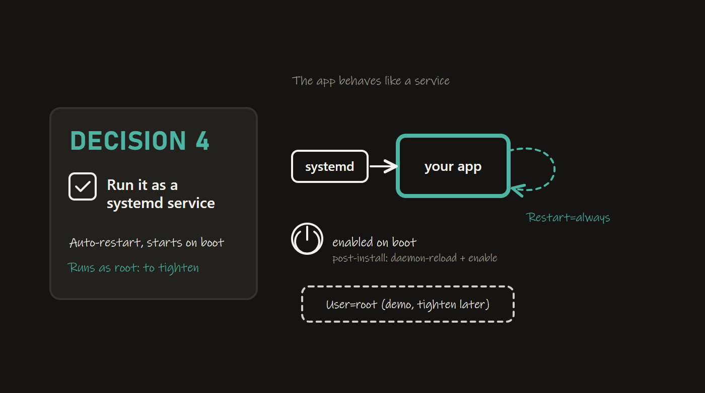
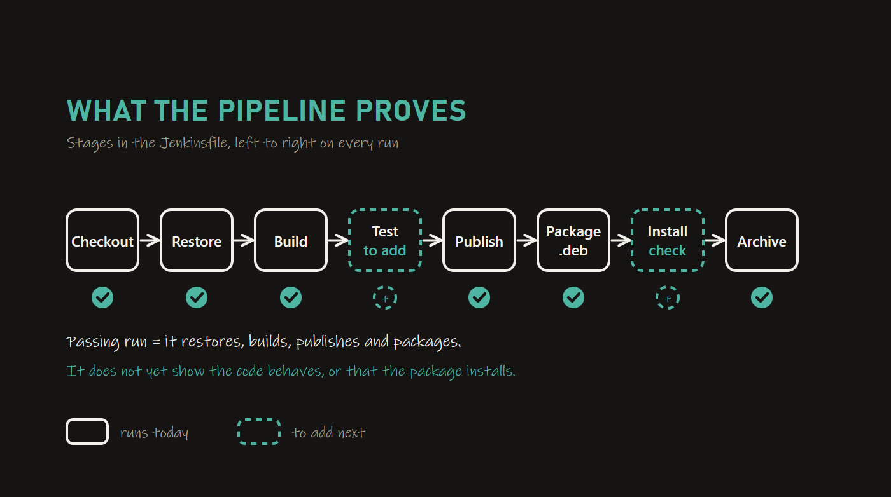

Case study
From a pushed commit to an installable package, without a manual step.
A Jenkins pipeline that builds an ASP.NET web application whenever the code changes and turns it into a Linux package that installs and runs as a service.
The problem
A build that only works on one laptop is not a release.
An ASP.NET application can be built and run from a development machine, but that is not something you can hand to a server. Someone has to remember the build steps, publish the right way for the target, copy files into place and set the app up to start on boot.
Done by hand, every release repeats those steps and can drift. The goal was to make the path from commit to a package that can be installed on a Linux machine a single automatic run.
The solution
Four decisions that make the pipeline repeatable
Let the repository trigger the build
Jenkins checks the repository every five minutes and starts a run when something changed, so nobody has to remember to build.
Publish self-contained for the target
The app is published for linux-x64 with its runtime included, so the target machine does not need .NET installed first.
Package it as a .deb
The published files, a systemd service and a post-install script are bundled into one Debian package, installed with a single command.
Parameterise instead of hard-code
App name, version, runtime and service name are job parameters, so the same Jenkinsfile can build another app or a new version.
Background
A pipeline is only useful if its output is something you can install
The application is a standard ASP.NET web app. The delivery target is a Linux server, where software is normally installed as a package and long-running programs are managed by systemd.
Jenkins sits between the two: it watches the code, runs the build and produces the package as a downloadable build artifact.
CI SERVER
Jenkins
APPLICATION
ASP.NET web app on .NET
PACKAGE
Debian .deb
RUNTIME
systemd service on Linux
Research
Each choice came from what the target machine and the pipeline need
Decisions were read off the build requirements: what the server has installed, how it starts programs, and how Jenkins can see the code.
DECISION 1
Polling the repository fits a Jenkins that cannot be reached from outside
Polling every five minutes needs no inbound connection from the code host to Jenkins.
The cost is a delay of up to five minutes before a change is picked up.

DECISION 2
Self-contained publish removes a server prerequisite
The runtime ships inside the package, so installing it does not depend on what .NET version the server has.
The package is larger as a result.

DECISION 3
Packaging files are generated inside the Jenkinsfile
The control file, service unit and post-install script are written at build time from the job parameters.
One file holds the whole pipeline, but the packaging pieces cannot be tested on their own.

DECISION 4
A systemd unit makes the app behave like a service
The unit restarts the app if it stops and the post-install script enables it to start on boot.
The unit currently runs as root, which is acceptable for a demo and a known thing to tighten.

Define
How might we turn a commit into an installable package without anyone repeating the steps?
THE DEVELOPER
Pushes code and expects a build to follow, with a clear pass or fail and a file at the end.
THE PERSON INSTALLING
Needs one package they can install on a Linux server and have running as a service.
These two roles come from the shape of the delivery path, not from a formal study.
Ideation
Each manual step became one pipeline stage
MANUAL STEP
Remember to build
BECAME
A five-minute repository poll that starts the run.
MANUAL STEP
Publish the right way for the server
BECAME
A self-contained linux-x64 publish with the runtime parameterised.
MANUAL STEP
Copy files and set up the service
BECAME
A .deb with a systemd unit and a post-install script, archived as the build artifact.
A package is the format Linux servers already understand, so installing, upgrading and removing use tools the operator knows. A pile of copied files would need its own instructions.
Keeping the whole flow in one Jenkinsfile with parameters means the pipeline can be read top to bottom and reused for another application without rewriting it.
Engineering
One stage, one job
A declarative Jenkins pipeline with string parameters, a repository poll and a stage for each step from checkout to archive.
- Checkout
- →
- Restore & build
- →
- Publish
- →
- Package .deb
- →
- Archive artifact
Build and publish
Restore and a Release build run first, then a publish for the chosen runtime, self-contained, into a publish folder.
Package layout
The published app is copied under /opt/<app>, with the control file in DEBIAN and the unit under /etc/systemd/system.
Service and post-install
The unit restarts the app on failure. The post-install script reloads systemd and enables the service so it starts on boot.
Output
dpkg-deb builds <app>_<version>.deb, which the last stage archives as the build artifact.
Testing & iterations
What the pipeline proves, and what it does not
The pipeline proves that the code restores, builds and publishes, and that a package file is produced on every run. That is a real check: a change that breaks the build is caught within a few minutes.

WHAT STAYED UNVALIDATED
There is no automated test stage, so a build that passes says the code compiles, not that it behaves correctly. The generated package has not been recorded here as installed and run on a target server, and the service runs as root. The version is a job parameter set by hand rather than taken from the repository.
Result & final thoughts
A commit now ends in a package, not a to-do list
The pipeline watches the repository, builds the application, publishes it for Linux and produces a versioned .deb with a service definition, archived on every successful run.
The lesson I would defend most is that a pipeline’s output should be the thing you actually deliver. Producing an installable package, rather than just a green build, makes the next step obvious and repeatable.
Add a test stage so a green run also means the code behaves, starting with unit tests for the controllers.
Run the service as a dedicated user instead of root, and derive the version from the repository instead of a parameter.
Install the package on a clean Linux machine from the pipeline to prove the service starts.